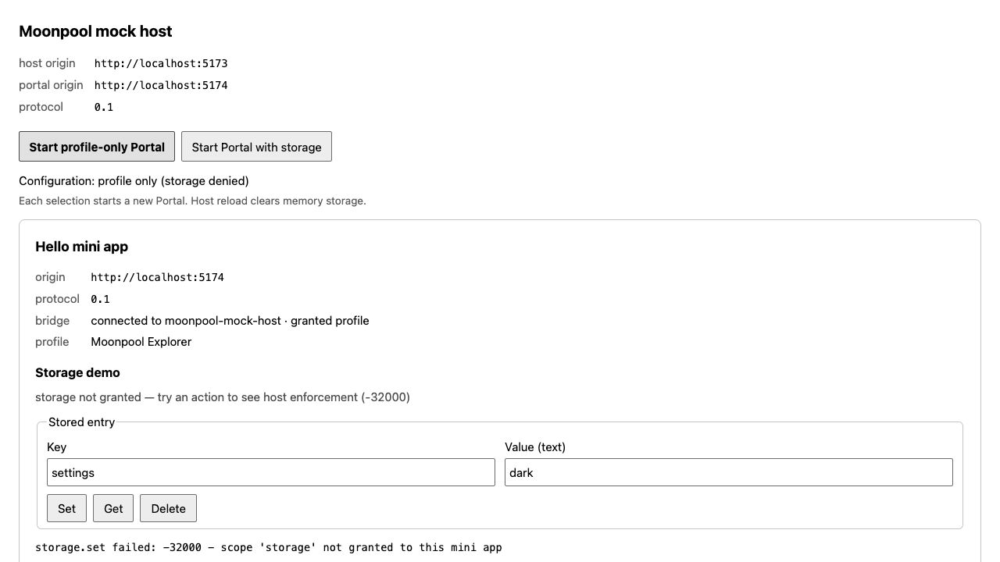
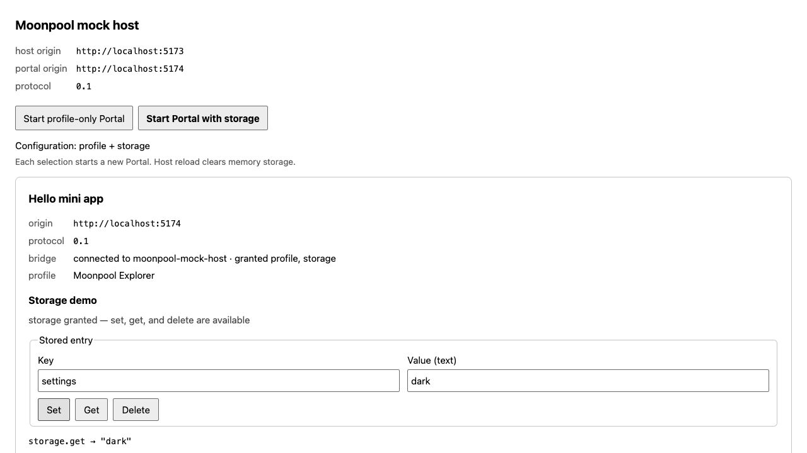

같은 저장 요청도,
권한에 따라 결과가 달라집니다.
T03의 저장소 담당자를 실제 버튼과 연결했습니다. 미니 앱은 같은 요청을 보내고, 호스트가 가진 출입증 목록에 따라 성공하거나 거절됩니다.
1 · 호스트의 두 구성으로 확인합니다
pnpm run dev 후 http://localhost:5173/에서 실행합니다. 기본 구성은 profile만 허용합니다. 미니 앱의 Set을 누르면 저장소 담당자가 설치돼 있어도 호스트가 -32000으로 거절합니다.

호스트에서 Start Portal with storage를 누르면 profile과 storage를 허용한 새 미니 앱을 시작합니다. 기본 key=settings, value=dark로 Set 다음 Get을 누르면 아래처럼 저장한 문자열이 돌아옵니다.

Delete 다음 Get을 누르면 storage.get → null입니다. 이 입력 화면은 문자열 값을 저장하는 예제입니다. 저장소 자체는 기존 JSON 값 계약을 지원하며 false·0·빈 문자열의 조회도 테스트합니다.
이번 코드의 핵심 표현
| 표현 | 뜻 | 비유 |
|---|---|---|
| grantedScopes | 현재 연결에서 호스트가 실제로 부여한 권한 목록 | 이번 방문에 발급한 출입증 |
| 새 Portal | 새 iframe 문서와 새 브리지 연결 | 이전 방문을 끝내고 새 출입증으로 다시 방문 |
| addEventListener | 버튼을 눌렀을 때 실행할 함수를 등록 | 초인종이 울리면 담당자를 부르기 |
| disabled | 입력과 버튼 조작을 잠시 막는 상태 | 처리 중인 접수 창구에 잠시 대기 표시 |
| finally | 성공과 실패 어느 쪽이든 마지막에 실행하는 부분 | 일이 끝나면 창구를 다시 열기 |
| Pick<MoonpoolClient, 'call'> | 클라이언트 중 요청 기능만 요구하는 타입 | 이 담당자에게 필요한 도구만 건네기 |
2 · 권한 선택은 호스트에서 합니다
examples/mock-host/src/main.ts의 두 버튼이 startPortal(false) 또는 startPortal(true)를 호출합니다. 새 호스트 연결에는 다음 권한을 전달합니다.
grantedScopes: storageAllowed ? ['profile', 'storage'] : ['profile'],조건 ? A : B는 조건이 참이면 A, 아니면 B를 고르는 표현입니다. 이 값은 미니 앱의 요청이나 URL에서 가져오지 않고, 호스트의 고정된 두 버튼이 선택합니다. 커널은 manifest에 선언한 권한과의 교집합을 handshake로 알려 줍니다.
3 · 클릭하면 요청하고, 완료 후 결과를 표시합니다
저장 화면은 examples/hello-miniapp/src/storage-demo.ts에 모았습니다. 초기 연결과 프로필 표시를 다루는 main.ts가 이 화면을 만들고, handshake가 성공한 뒤 ready(result.grantedScopes)를 호출합니다.
setButton.addEventListener('click', () => {
void perform(STORAGE_METHODS.SET);
});이벤트 처리기는 비동기 작업의 반환값을 사용하지 않으므로 void로 표시합니다. 요청 실패는 perform 내부의 catch에서 처리합니다. 다른 두 버튼도 각각 GET과 DELETE를 전달합니다.
if (controls.disabled) {
return;
}
controls.disabled = true;
output.textContent = `${method} pending...`;handshake 이전이나 이미 처리 중인 요청이 있으면 시작하지 않습니다. 작업 중에는 fieldset 안의 입력과 버튼을 함께 잠가 연속 요청으로 결과가 뒤섞이지 않게 합니다. 이 순서 제어는 예제 화면의 동작이며, 커널의 일반 동시 요청 기능을 바꾸지 않습니다.
await client.call(method, { key, value: valueInput.value });
output.textContent = 'storage.set succeeded';저장 요청을 보내고 await가 끝난 다음에만 성공 문구를 씁니다. delete도 같은 방식으로 완료를 기다립니다. 키와 문자열 값은 그대로 전달하므로 빈 키와 빈 문자열도 보존합니다.
} catch (error) {
const detail =
error instanceof MoonpoolError ? `${error.code} - ${error.message}` : String(error);
output.textContent = `${method} failed: ${detail}`;
} finally {
controls.disabled = false;
}위는 오류 처리 부분의 발췌입니다. 호스트가 보낸 오류는 번호와 메시지를 표시하고, 로컬 검사 오류도 저장 칸에 표시하며 프로필·연결 상태는 유지합니다. 성공해도 실패해도 finally가 버튼을 다시 열어 다음 조작을 할 수 있습니다.
4 · 조회 결과도 실제로 확인합니다
const result = await client.call(method, { key });
if (
typeof result !== 'object' ||
result === null ||
Array.isArray(result) ||
!('value' in result) ||
!isJsonValue(result.value)
) {
throw new Error('storage.get returned an invalid value');
}
output.textContent = `storage.get → ${JSON.stringify(result.value)}`;범용 call의 결과는 unknown입니다. 배열이 아닌 객체이고, value가 있으며, 그 값이 JSON 데이터인지 확인합니다. 앞서 저장 입력에 사용한 isJsonValue를 재사용합니다. 이번에도 as 없이 조건문으로 타입을 좁힙니다.
여기서 { value: null }은 없는 키의 정상 응답입니다. 응답 전체가 null인 경우와는 다릅니다. 문자열은 따옴표를 포함해 JSON으로 보여 주고, false와 0도 그대로 보입니다. textContent를 쓰므로 값이나 오류 메시지가 HTML처럼 생겨도 글자로만 표시합니다.
5 · 출입증은 새로, 서랍은 그대로
구성을 바꿀 때 이미 연결된 객체의 grants를 고치는 대신 이전 transport를 닫고 iframe을 교체합니다. 아래는 그 핵심 순서의 발췌입니다.
activeTransport?.close();
const iframe = document.createElement('iframe');
iframe.title = MANIFEST.id;
iframe.src = `${portalOrigin}/`;
portal.replaceChildren(iframe);새 iframe에 맞는 transport와 호스트를 같은 자바스크립트 작업 안에서 붙입니다. 따라서 미니 앱의 첫 initialize 요청이 수신 준비보다 먼저 실행되지 않습니다. 이전 프레임의 창과 새 프레임의 창도 구분됩니다.
// Storage belongs to this host page, not to one Portal's document or grants.
const storage = createMemoryStorageProvider();저장소는 startPortal 바깥에서 한 번만 만듭니다. 그래서 profile-only → storage 허용 → profile-only로 연결을 교체해도 데이터는 남고, 권한이 없는 동안에는 읽을 수 없습니다. 호스트 페이지를 새로 열면 메모리 저장소 자체가 새로 만들어져 데이터가 사라집니다.
이 선택은 ADR 0009에 기록했습니다. 런타임 동의 UI나 새 프로토콜을 추가한 것은 아닙니다. 미니 앱이 외부 주소로 이동하는 일반적인 상황을 감지하는 작업은 별도 T17–T18입니다.
6 · 자동 테스트와 실제 브라우저에서 확인했습니다
새 테스트 17개를 추가하고 기존 초기 연결·프로필 사례 4개를 강화했습니다. 구현 전에는 대상 36개 중 21개가 실패했고, 구현 후에는 모두 통과했습니다.
- 초기화 전 조작 금지, 초기화 실패 시 비활성 상태 유지
- 기본 구성에서 set/get/delete 모두 -32000, 기존 데이터 보존
- 허용된 구성에서 저장 → 조회 → 삭제 → 없는 키 조회
- 빈 키·빈 문자열, false·0의 조회, HTML 같은 값과 오류의 텍스트 처리
- 잘못된 조회 결과 거절, 요청 중 중복 조작 방지, 실패 후 재시도
- 호스트 구성 변경 때 이전 transport 종료와 iframe 교체, 저장 내용 유지
전체 254 / 254 통과 · 16개 테스트 파일
타입 검사·린트·두 예제 빌드 통과
실제 브라우저에서 저장·조회 성공, 기본 구성 -32000 거절, 구성 교체 후 데이터 유지, 삭제 후 null 확인
브라우저의 iframe 안쪽 클릭 자동화가 동작하지 않아 Tab·Enter 키보드 조작으로 같은 버튼을 실행해 확인했습니다. 위 두 이미지는 그 실제 결과입니다. 테스트용 데이터는 settings 키의 dark 문자열입니다.